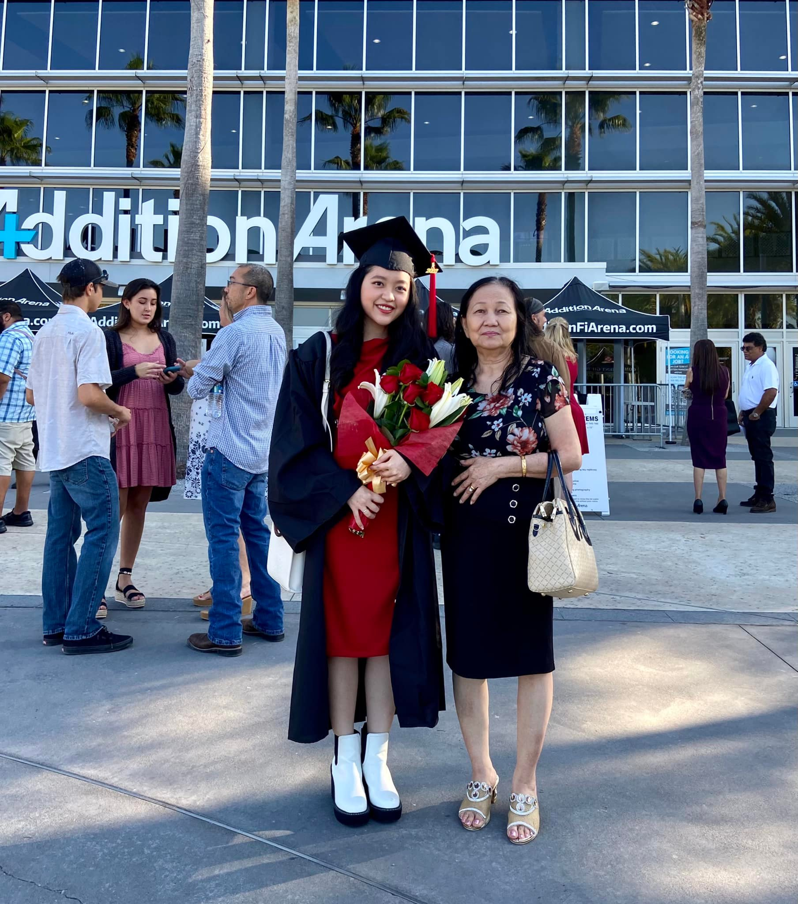

This is a picture of me and my grandma when I graduated from my commmunity college with an A.A Degree

When I started college three years ago, I chose to leave my comfort zone and begin a new chapter in my life. Initially, I majored in business administration because my family was in the industry and wanted me to follow in their footsteps. I followed my parents' advice and studied business administration for around one year. Despite my interest in trade and business, I did not consider it my passion. I sensed that something was off. I told my parents how I felt, and they declined. They preferred that I pursue a career in business because that is what they have done their entire lives and it would be simpler for me to follow in their paths.
One day, my friend asked me to attend a coding session with her. After the workshop, I was captivated and astonished by how programming could build great things, and I wondered whether I could spend interminable hours coding without being fatigued. And, I knew right away that the answer was yes. Therefore, I chose to change my profession to computer science despite parental opposition. My mother discouraged me from changing my degree because she believed that women could not do code, and in particular, she questioned how a nineteen-year-old girl with no experience could compete with a ten-year-old who had been studying coding. I assured her I will demonstrate it to her. I am confident that I can make my own path in this industry and become an expert if I am persistent and put in the necessary effort over time. Since then, I have gained programming knowledge through working on academic and personal projects for around two years.
Another crucial component in my decision to pursue programming is that I have a strong desire to work in a collaborative and creative setting with other programmers. I desire to always be a member of a potential team and to develop wonderful things with my teammates. I believe that teamwork and talent are the most essential factors in the creation of marvelous things. And my aim is to be able to design incredible things with my team members that will dramatically improve the learning, working, and wellness of people.